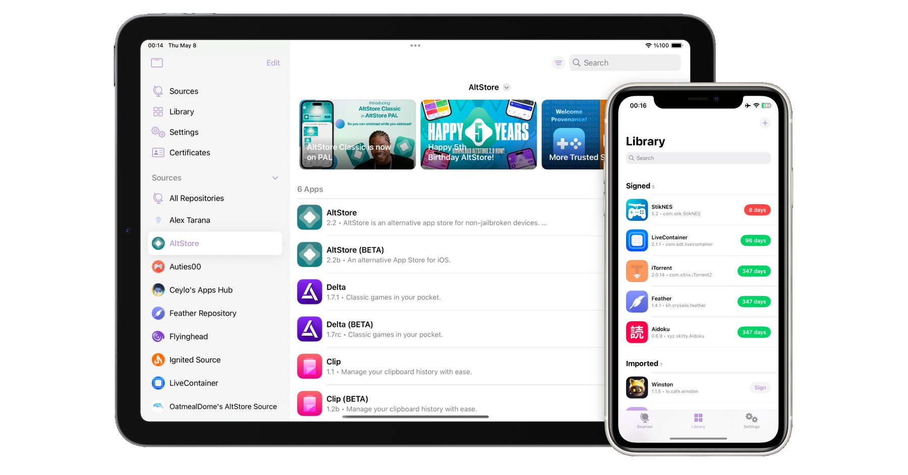

Feather
Sign and install apps on your iPhone and iPad. No computer needed, and it updates itself.

Everything you need to sideload.
Your certificate, your apps, right on your device. No jailbreak and no cable.
Updates Itself
New versions download, sign and install from Settings. Turn on betas to get features first.
Certificate Overview
See days left, capabilities, devices and the apps signed with each certificate. Get alerts before it expires or if it's revoked.
Live Progress
Signing, downloads and imports show in a floating panel. Tap it to cancel at any time.
AltStore and GitHub Sources
Browse AltStore sources, preview them before adding, or install IPAs straight from a GitHub repository's releases.
Signing Options
Change names, icons and bundle IDs, enable Files support, inject tweaks and patch apps for Liquid Glass.
Backup and Transfer
Back up your apps, certificates, sources and settings, and restore them on another device.
Up and running in minutes.
Get a certificate
Use your Apple Developer account, or a provider listed in Feather.
Import it
Add the .p12 and .mobileprovision files in Settings → Certificates.
Sign and install
Pick an app from a source or import an IPA, then tap Sign and Install.
Questions.
Do I need a computer or a jailbreak?
No. Feather runs on stock iOS and iPadOS 16 or later. You only need a signing certificate.
How is it different from AltStore or SideStore?
AltStore and SideStore sign with a free Apple ID and refresh apps every 7 days. Feather signs with a developer certificate, so apps last as long as the certificate does. It still reads AltStore sources.
How do I install Feather?
Download the IPA and sign it once with your certificate using any signing tool, or add the AltStore source. After that, Feather updates itself from Settings → Updates.
Does Feather collect any data?
No. There's no tracking or analytics. Crash logs stay on your device unless you choose to share them.
Is it really free?
Yes. Feather is free and open source under the GPL-3.0 license. It's a fork of Feather by Samara.